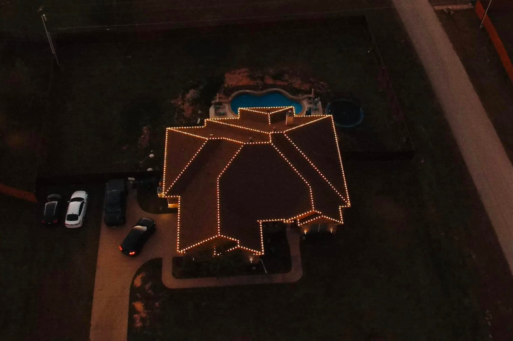

Christmas Light Installation in Longview, TX
Custom-cut, professional-grade Christmas lights — installed, maintained, and taken down by the same trusted Yard Dog crew.
Get a Free QuoteWho installs Christmas lights in Longview, TX?
Yard Dog Landscapes is a family-owned company that hangs professional Christmas lights across Longview and East Texas, and we hold a 5.0 rating across 111 Google reviews from local homeowners. We design the display, install commercial-grade lights on your roofline, trees, and beds, and handle takedown after the season so you never touch a ladder. Cost depends on the size of your home, how much of the property you want lit, and the design you choose, so every display is quoted on its own. Call (903) 844-6877 to book your Longview light install early — the season fills up fast.
Professional Christmas Lights for Longview & East Texas
Yard Dog provides hassle-free Christmas lights Longview TX homeowners actually look forward to seeing every year. We measure your roofline, custom-cut professional-grade lights to fit your home, install everything cleanly, and come back to take it all down after the season. You don't touch a ladder. You don't store a tangled mess in the attic.
Quality Christmas lights Longview Texas comes down to the details — clips that don't damage shingles, bulbs that don't burn out mid-season, and a crew that comes back if anything goes wrong. As an established Longview landscaping company that already handles your lawn care Longview TX, we know your property and your preferences. We've been doing East Texas Christmas lights and East Texas landscaping side by side for years.
We install across Gregg, Smith, Harrison, and Upshur Counties — including Kilgore, Hallsville, Marshall, and Tyler. Residential and commercial. Warm white classic, full color, or a custom palette. Roofline only or the full package with tree wraps and yard accents.
Everything we cover.
Custom-cut to your roofline.



Why East Texans pick us.
Local Crew, Local Knowledge
We've spent years working East Texas yards. We know the soil, the grass, and the seasons.
Transparent Pricing
Written, itemized estimates. No upsells, no surprise add-ons.
Reliable Scheduling
On time, every time. Same crew on every visit.
What humid East Texas winters do to cheap lights.
Yard Dog Lights (our Christmas-lights division) does professional outdoor light installation across Longview, Kilgore, White Oak, Hallsville, and the rest of our East Texas service area. We install C9 LED roofline systems, warm-white ground stakes, tree wraps, garland accents, and wreaths — all powered through professionally installed timers and weatherproof connections.
What sets East Texas Christmas-light work apart from the same job in colder climates: humidity. We use connectors and tape specifically rated for our wetter winters, because cheap lights and standard tape will fail by January when humidity meets a freeze cycle. We also size the gauge of run wire based on the actual circuit length, not the marketing claim on the package. The result is a system that holds up year after year without the half-the-strand-dark problem that plagues DIY installs.
Booking opens in early October. Installation runs through Thanksgiving week, lighting nights are yours to schedule, and we come back to take it all down in January — no leaving icicle lights up until March. Free property estimate. Pricing per linear foot installed, with a discounted rate for return clients who reuse the same install.
Proudly serving Longview, Kilgore, Hallsville, Marshall, Tyler, and surrounding East Texas communities.
Also serving these East Texas towns:
Frequently Asked Questions
How much does Christmas light installation cost in Longview, TX?
Most Christmas light installs in the Longview area start around a few hundred dollars, priced by the linear foot of roofline and railing you want lit. Your exact price depends on the size of your home, the design, and the run of lights — call (903) 844-6877 for a free property estimate and we'll give you a firm number.
What's included in Christmas light installation?
We handle everything — professional-grade lights, design, installation, timers, takedown in January, and storage — so you never touch a ladder. Return clients who reuse the same install get a discounted rate.
When should I book Christmas lights in East Texas?
Booking opens in early October, and installation runs through Thanksgiving week, so the earlier you reserve your spot the better. Lighting nights are yours to schedule, and we come back to take everything down in January.
Do you take the lights down too?
Yes. Takedown in January is included — we don't leave lights hanging until spring. Yard Dog is family-owned, fully insured, and holds a 5.0 rating across 111 Google reviews from East Texas homeowners.